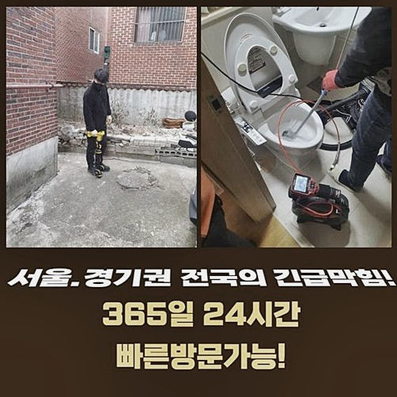
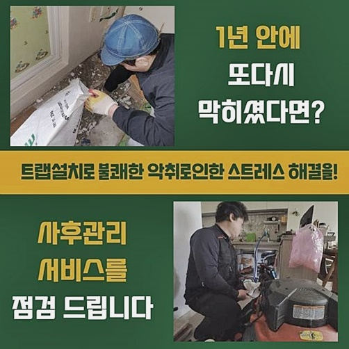
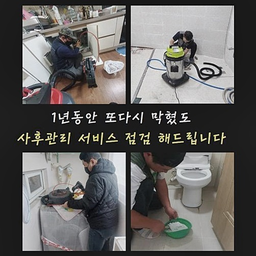
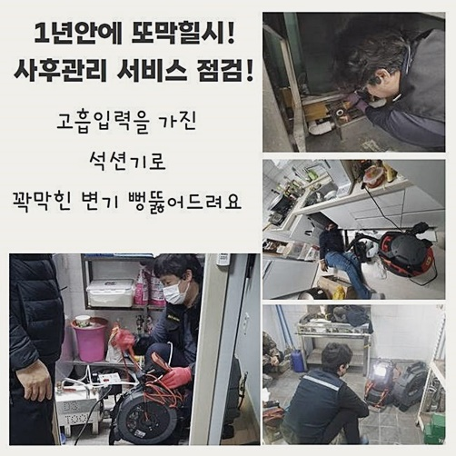
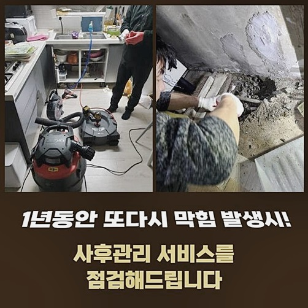
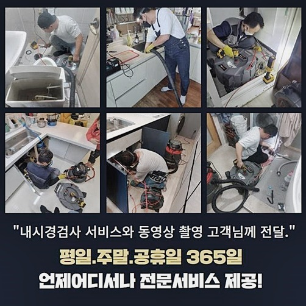

🏠 남양주 삼패동오수관뚫음 진건읍 집수정청소 설비업체
양주 남양 싱크대막힘 전문 시공 후기

📋 작업 개요
- 위치: 양주 남양, 남양, 양주
- 서비스 유형: 싱크대막힘, 하수구막힘, 배관막힘, 집수정막힘, 뚫는업체, 배관청소, 설비공사
- 작업 일시: 2024. 8. 28. 14:09
- 업체명: 하수구수사대 (010-5615-2118)
🔍 문제 상황
남양주 삼패동오수관뚫음 진건읍 집수정청소 설비업체
고장이라곤 없던 곳이 뜬금없이 고장나면 빈자리가 크게 느껴지고 불편감이 쓰나미처럼 밀려들어올 것입니다
특히나 수도시설을 활용하지 못하는 순간에는 위생문제도 추락하게 됩니다
얼마전에 접수받은 후에 이동했던 작업지도 매한가지로 같은 고충을 겪고 계셨어요
고객님은 하수구에서 올라오는 악취 문제가 제일 심하다고 하셨는데 하수도 제대로 이동하지 않거니와 더불어 생긴 악취는 감당이 안된다고 어떻게든 손써달라고 하셨어요
하수구의 막힘이나 고장은 얼른 손봐주지 않으면 대공사가 들어가야할 상황들까지 생성할 수 있습니다
통계적으로 보았을 때 천천히 막혀나가는 상황은 제대로된 사용 방식을 준수하고 따르지 않아서 생긴 경우가 대다수인데요
잔수가 가득 고여있고 각종 이물질이 둥둥 떠다닌다면 싱크대에 고인 하수 및 불순물을 철저히 없애야만 통로 안을 점검할 수 있어요
싱크대에 오염된 찌꺼기가 고여있다보니 생활에 제약이 많으셨을 것이고 손쓸 방도 없이 무기력하셨을 것이니 아무런 문제없었던 때처럼 설비를 마음껏 쓰실 수 있게 얼른 되돌려드려야 했습니다
막힘은 언제든 발생하니 새벽 시간대에 막히면 언제든지 출동갈 준비를 해야하며 언제라도 듬직하게 지원해드려야 합니다
집에 발을 들여놓자마자 느껴지는 썩은 내가 심한 정도라서 빠른 대처를 들어가서 보완해드리고자 했습니다
테스트 일환으로 물을 내려봤는데 오래 틀고 있어도 물이 폐수되지 않은데다 범람 현상까지 유발되는 장면을 목격했어요
얼마 전 왔던 업체들도 고난도 상태라고 판단돼서 어려운 기색으로 철수했었고 잘하는 곳을 묻고 물어 저희에게 방문 접수를 해주신 겁니다

🔎 원인 분석
💡 전문가 진단: 정밀 진단 장비를 사용하여 슬러지의 고착 여부를 판명하고 타격/세척 작업을 실시했습니다.
저희의 장비나 실력이 미진한 부분을 보강했기에 다소 난해했던 상황을 유연하게 이겨낼 수 있었던 것이죠
까다롭다고 내빼는 게 아니라 원인도 확실히 규명해주고 야무지게 진행을 해줬던 점이 만족한 반응을 보이셨네요
거기다 착한 가격대에 하자가 있으면 다시 봐주는 것도 확실히 안심이 된다고 힘이 되는 멘트도 해주셨네요
구체적인 오류 인자를 탐지해서 보다 성과가 좋을 돌파구를 발굴할 수 있었습니다
석션기나 스케일링 장비를 투입해서 청소 절차를 거치면 장애를 부르던 문제인 막힘 문제는 나아집니다
습식 청소기를 통해서 오물을 빨아당기는 작업은 귀찮아보여도 나중을 위한 투자입니다
소량의 찌꺼기가 남아있더라도 점점 축적되어 크게 자라나는 염려가 되니 제대로 제거해야합니다
다시 막혀버리면 경비의 손실도 무시 못하지만 고객님이 겪을 난감함이 되풀이 될 것이 분명하기에 쇠 뿔도 당김에 빼야합니다
하수관 속에 기름질이나 각종 찌꺼기가 뭉쳐버리면 쓰고 난 하수가 버려지는 길목이 가로막혀서 제자리걸음하여 물이 고여버리는 겁니다
이와 같은 사태를 사전에 대비하려면 주기적으로 하수 시설을 눈여겨 보면서 점검받아야 해요
배관을 보는 카메라를 써서 이물질이 떡하니 자리한 모습을 모니터링할 수 있어요
이러한 기름슬러지가 쌓이는 것은 제대로된 사용 방식을 적용하지 않았기에 쌓여버리게 됩니다
경미한 양이라 변명하면서 음식 잔여물 및 찌꺼기들을 하수구 속에 배출한다면 조금씩 쌓이다 문제가 발현돼요

🔧 작업 과정
지금은 괜찮다 싶겠지만 오염원은 깊은 위치에서 딱딱하게 성질이 변하여 봉쇄되기까지 합니다
이미 오염된 배관을 정리해 나갈 때는 뱅글뱅글 도는 샤프트를 쓰면 확실한 개선을 꿈꿀 수 있어요
돌아가는 쇠사슬으로 타격하여 층을 이루며 양이 불어나고 경화된 이물질들을 잘게 쪼개줄 수 있기 때문입니다
특히 긴 몸체의 말단 파트가 갈고리 형태라서 오염원을 손쉽게 절단하고 걸어 올릴 수 있어요
배관 속의 스케일링으로 강하게 접착된 측면까지 손봐서 하수가 흘러가게 만듭니다
배관의 어떤 부분이 얼마나 막혀버린건지 세부적으로 계속해서 보고를 드려서 작업 과정을 아시게끔 했습니다
주름관을 먼저 떼고 석션을 통해서 정화작업을 거쳤는데 막힌 측면이 달라지진 않았어요
스케일링을 완수하고 나니 잔뜩 고여있던 하수가 일시에 집수정으로 이동하더라고요
상부에 고여있는 오염물을 처리한다고 해서 절대적으로 막힘이 끝을 맺진 않으니 디테일한 세정 과정이 필요하죠
작업 중에도 예상치 못한 오류들이 속속들이 보이기도 하니 전문가의 능숙한 대처가 필요해요
고성능의 배관 전용 장비와 경험을 살려서 막힘을 초래한 물질들을 제거해 나가기 시작했어요
내부를 맑게 만들기 위해선 앞서 가동한 석션과 스케일링기 여러가지 청소 도구로 수리를 해주게 됩니다
이물질이 자리한 포인트는 몇 군데만 그렇지만 새것처럼 설비를 되돌리려면 고압수까지 활용하면 좋아요
석션을 돌려서 부유하는 노폐물들을 찬찬히 없애주고 고압수를 쏴서 깨끗한 결과물을 만들 수 있어요
초반부에 내시경을 넣어 내부를 탐사한 결과 이물질이 가득 고여있었던 지라 장애물로 인해 물이 못 나가던 상태라고 판단이 되었었네요
가벼운 장치만 돌려서는 딱히 효과적이지 않을 듯 해서 절대적으로 쾌적하게 만드는 게 유일한 방책이라고 보였어요
저희의 촬영 도구로 내측의 살펴보는 과정과 본격적으로 뚫어주는 것은 배관 구조에 대한 충분한 이해와 기술력이 뒷받침되어야 합니다
장애물은 다수의 지대에서 동시에 형성될 수 있기 때문에 모두 조치를 하지 못하면 시원스럽게 트이는 물길이 되돌아오지 않아요
당장에 물을 쓸 수 없다는 점은 상업시설이 아니라도 고충을 야기할 수 있으니 빠른 조치에 들어가야 합니다
온 집에 배여버리는 악취는 내부에서 활동하는 모든 사람들에게 인상을 찌푸려지는 경험을 주니 얼른 손을 써야 합니다


✅ 작업 완료
실내 배수 시스템에서 보통 목격되는 이물질들은 식재료 잔량이나 먼지와 슬러지화된 유분입니다
이와 같은 물질은 빠르게 삭아가면서 독한 악취를 퍼뜨리고 균의 번식도 이뤄집니다
미관이나 위생문제도 걱정되지만 거주자 가구원분들의 생활을 해롭게 변화시킬 수 있는 문제이니 내팽겨치고 미루기만 한다면 치명상을 입을 수도 있습니다
이처럼 곤란한 일을 안타깝게도 겪게 되셨으면 믿고 맡길 수 있는 전문진과 함께 비정상적인 부분을 판단하고 모든 오류를 수습하는 편이 모범 답안임을 알려드려요!
장기간 동작해온 하수구라면 강도 조절을 잘 하는 기술력 좋은 업체를 찾아야 하자가 없습니다!
싼 가격이지만 주먹구구식으로 뚫으려고 한다면 배관의 파손이나 누설같은 하자가 빚어질 수 있으므로 신중을 기하셨으면 합니다




⚠️ 주방 싱크대 배관 막힘 예방 수칙
- ✅ 기름기가 묻은 식기나 프라이팬은 설거지 전 키친타올로 반드시 기름때를 닦아내세요.
- ✅ 주기적으로 싱크대 개수대에 뜨거운 물을 가득 받아 한 번에 내려 배관 내부 기름을 씻어내세요.
- ✅ 배수구 거름망을 미세한 필터로 사용하시고 음식물 찌꺼기가 틈으로 새어 들지 않게 관리하세요.
- ✅ 베이킹소다와 식초를 뜨거운 물과 함께 일주일에 한 번씩 부어주면 배관 살균과 막힘 예방에 좋습니다.
💡 핵심 정리
- 확실한 장비 작업(내시경 점검 및 샤프트 스케일링)으로 원인을 뿌리 뽑습니다.
- 작업 후 1년 이내에 동일한 부위 재발 시 100% 무상 A/S 서비스를 보장합니다.
- 서울 · 경기 · 인천 전 지역에 24시간 언제든 긴급 출동할 수 있도록 항시 대기 중입니다.
❓ 자주 묻는 질문 (FAQ)
🚨 양주 남양 싱크대막힘 문제로 고민이신가요?
정확한 원인 진단과 확실한 시공으로 재발 없는 해결을 약속드립니다.
24시간 긴급 출동 | 서울 · 경기 · 인천 전지역 | 1년 내 재발 시 무상 A/S